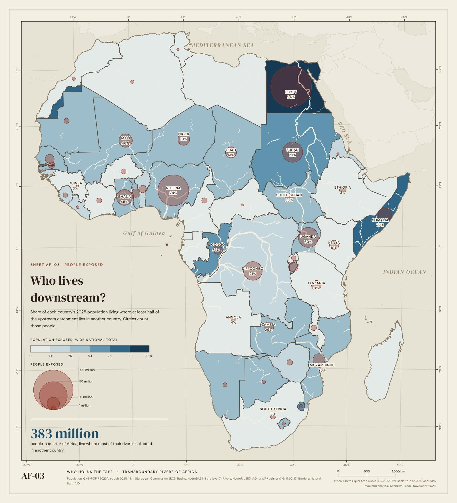
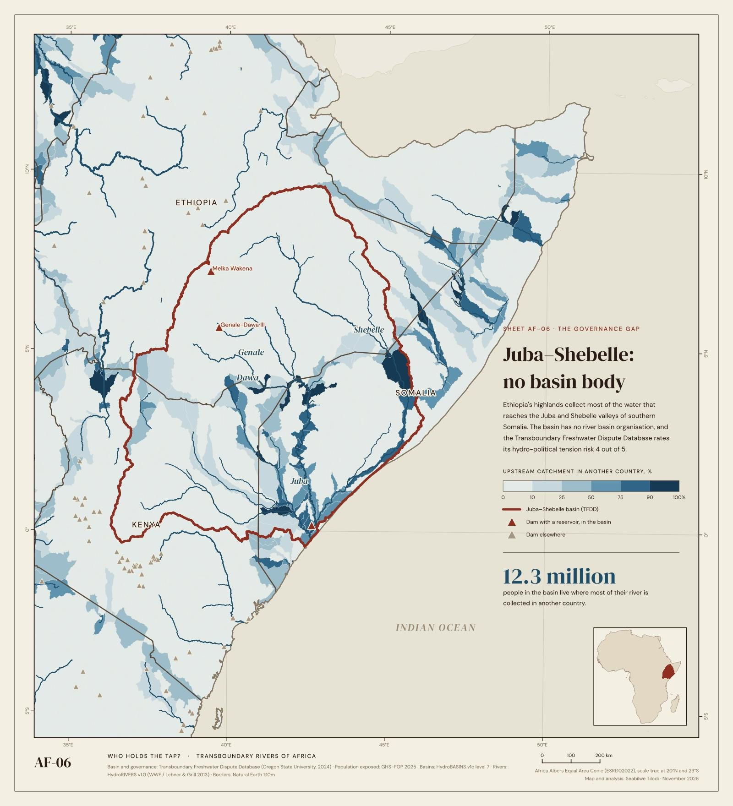

Who Holds the Tap? Africa's shared rivers
Most of Africa's big rivers cross a border before they reach the sea. This project traces water through 12,345 sub-basins to measure how much of each place's river is collected in another country, who lives there, and where dams and weak governance raise the stakes.
What the analysis found
- 383 millionpeople, a quarter of Africa, live where most of their river is collected in another country.
- 42%of the continent's built reservoir storage sits upstream of a border.
- 35.9%of Africa drains inland and never reaches the sea.
- 12.3 millionpeople in the Juba–Shebelle basin, which has no river basin organisation.
The six map sheets
Select a sheet to open it at full size.
-
AF-01 Where Africa's rivers run
HydroRIVERS channels drawn by average discharge over 12,345 HydroBASINS level-7 sub-basins. Sand marks the 35.9% of the continent that drains inland, to Lake Chad, the Okavango delta and the dry hollows of the Sahara.
-
AF-02 How much of the river comes from abroad?
For every sub-basin, the share of its upstream catchment that lies in another country, traced through the river network. 49% of Africa's land drains into a neighbouring country before it reaches the sea or an inland sink.
-

AF-03 Who lives downstream?
The share of each country's 2025 population living where at least half of the upstream catchment is foreign, with circles for the number of people. Egypt 94%, Somalia 77%, the Republic of the Congo 74%, Sudan 51%, Uganda 50%.
-
AF-04 Borrowed water, under pressure
Upstream dependency crossed with WRI Aqueduct baseline water stress. 111 million people live where both are high, 106 million of them in Egypt.
-
AF-05 Storage upstream of a border
Reservoirs from Global Dam Watch sized by built storage. 42% of the continent's built storage, 399 of 953 km³, sits upstream of a border, led by Kariba above Mozambique and the Grand Ethiopian Renaissance Dam above Sudan and Egypt.
-

AF-06 Juba–Shebelle: no basin body
Ethiopia's highlands collect most of the water that reaches southern Somalia. 12.3 million people depend on it, the basin has no river basin organisation, and the Transboundary Freshwater Dispute Database rates its tension risk 4 out of 5.


Method
Each HydroBASINS level-7 sub-basin was linked to the one downstream of it, so every sub-basin's full upstream catchment could be traced and split by country. A sub-basin's dependency is the share of that catchment lying outside the country that holds it. Places beside a large river (over 100,000 km² upstream) take that river's share if it is higher, so the Nile Delta is not mistaken for a local catchment.
People were counted from the GHS-POP 2025 1 km grid on sub-basin and country pieces; a person counts as exposed when at least half of their upstream catchment is foreign. Dependency was crossed with WRI Aqueduct 4.0 baseline water stress, dams from Global Dam Watch were traced to the next country downstream (dams that only regulate a natural lake were left out), and the Transboundary Freshwater Dispute Database supplied basins, treaties, organisations and tension risk. All areas were measured in Africa Albers Equal Area, and the whole analysis was run in QGIS with PyQGIS.
Data
- Sub-basins and rivers: HydroBASINS v1c and HydroRIVERS v1.0 (WWF, Lehner and Grill 2013); basin attributes from BasinATLAS.
- Population: GHS-POP R2023A, epoch 2025, 1 km (European Commission JRC).
- Water stress: WRI Aqueduct 4.0 baseline.
- Dams: Global Dam Watch v1.0.
- Basins and governance: Transboundary Freshwater Dispute Database (Oregon State University, 2024).
- Protected areas: WDPA, November 2026 (UNEP-WCMC and IUCN). Borders: Natural Earth 1:10m.